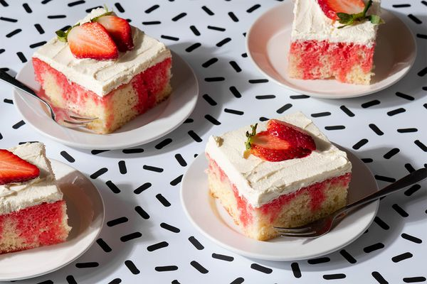

Strawberry Pop Cake

Description:
The Strawberry Pop Cake is a delightful treat that combines the sweetness of ripe strawberries with the moist and fluffy texture of cake. This bite-sized dessert is a burst of fruity flavor, offering a perfect balance of sweetness in every pop. With its vibrant color and irresistible taste, the Strawberry Pop Cake is a charming and enjoyable indulgence for any occasion.
Ingredients:
- Strawberry or Vanilla cake mix
- two packages of strawberry jello
- whipping cream
- Strawberry
Steps:
- Follow the instructions on the strawberry or vanilla cake mix to prepare the batter.
- Pour the batter into a baking pan and bake according to the package instructions.
- When the cake is ready, poke some holes in it.
- Dissolve both packages of strawberry jello in hot water and pour it over the cake.
- Add whipping cream and strawberries to the cake for decoration.
- Done!